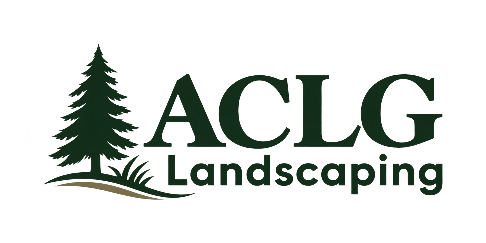
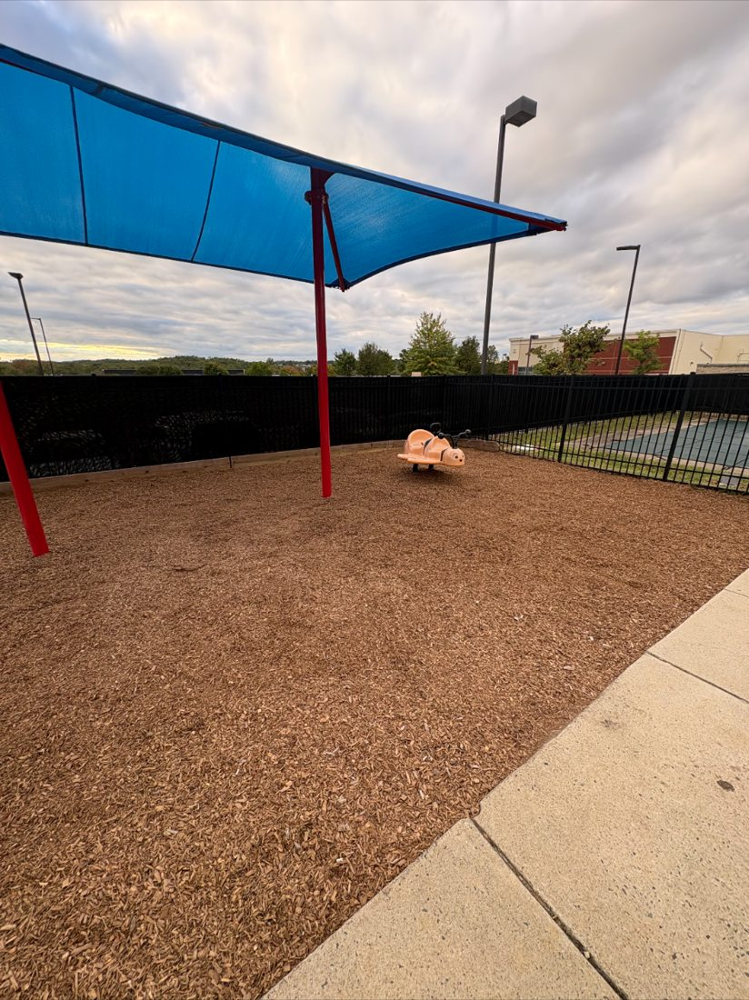
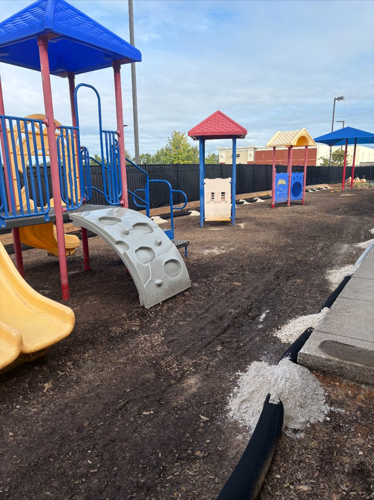
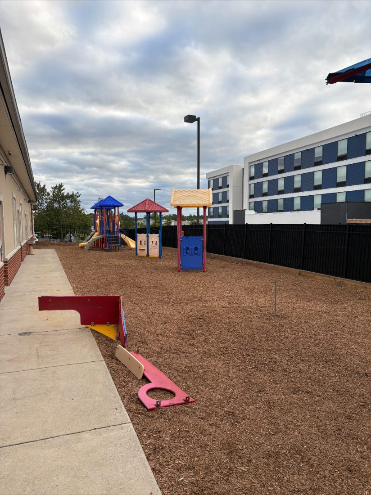

01 /
Lawn Mowing & Maintenance
Regular mowing and lawn upkeep to keep your grass looking clean and cared for.

LOCALLY OWNED · BUILT ON PRIDE
Lawn mowing, precise edging, fresh mulch, and dependable property cleanups. Real outdoor work, done with pride.
THE ACLG DIFFERENCE
From neatly cut lawns and crisp edges to fresh mulch and seasonal cleanups, ACLG focuses on the hands-on yard work that keeps your property looking its best.
WHAT WE DO
Practical lawn and landscape maintenance for homes, businesses, and community properties.
Regular mowing and lawn upkeep to keep your grass looking clean and cared for.

Neat borders along walkways, driveways, and lawn edges, plus careful trimming around obstacles.

Fresh mulch for existing beds, tree rings, and outdoor areas, with careful spreading and cleanup.

Leaves, debris, and general property cleanup to help keep your outdoor spaces tidy.
Service photos are illustrative unless labeled as actual ACLG work. Playground photos below show a real completed project.
REAL ACLG WORK
A playground mulch project at a local school, photographed before and after the work.


Have a property that needs some attention?
Ask for a Free Quote ↗A LITTLE ABOUT US
ACLG Lawn & Landscaping LLC is built around a straightforward promise: show up, work hard, and take pride in the details.
From everyday lawn maintenance to bigger cleanup and mulching jobs, we treat every outdoor space with care.
RIGHT HERE AT HOME
Local service with the kind of care you'd expect from a neighbor.
LET'S GET STARTED
Tell us what your yard or property needs. Whether it is mowing, edging, mulching, or cleanup, we would love to hear about it.
Tell us about your project and we’ll receive your request by email.